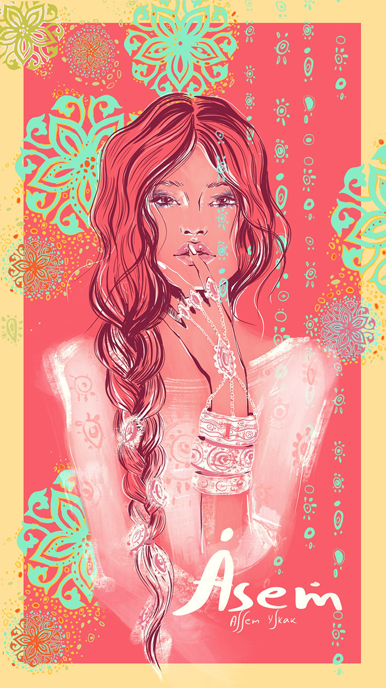
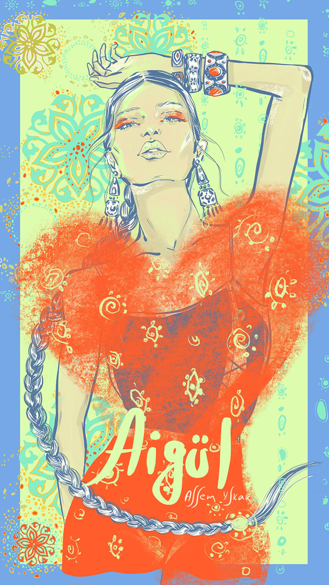
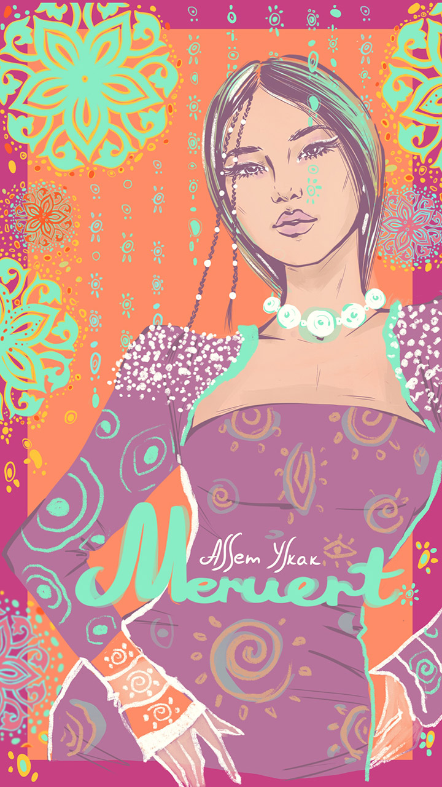
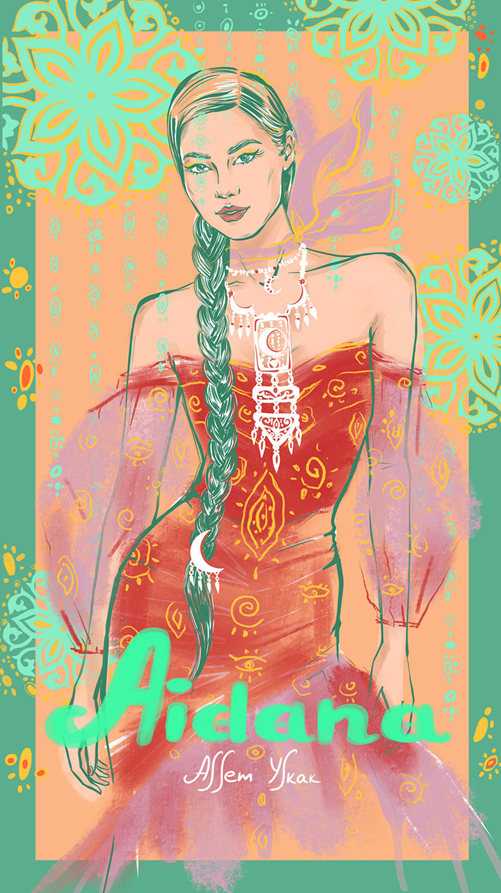
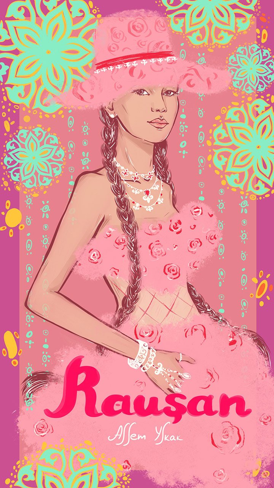

Добро пожаловать в мою галерею!
Меня зовут Асем Ыскак, и я — художница и фэшн иллюстратор. В моем портфолио есть сотрудничество с такими брендами, как Max Mara, Tiffany, Интертоп, Topstretching и другими. Я участвовала на различных выставках, мои иллюстрации печатались в глянцевых журналах.
Мой главный источник вдохновения — это женщины и их внутренний мир.
Проект «Имена» — это моя личная исследовательская работа, в которой я вместе с моими Instagram подписчицами исследую казахские женские имена. Мы все индивидуальны, но какая-та схожесть и влияние имени на человека меня порой удивляет. Анализируя смысл и характер каждого имени я создаю уникальные образы (аватары) для девушек. Каждый аватар сочетает в себе традиционные элементы с современным стилем.
Через мои именные аватары я стремлюсь показать счастливых женщин, чувствующих любовь. Чтобы женщина ассоциируя себя с именем, укрепляла бы свою собственную ценность и любовь к себе.
Проект продолжается. Каждую неделю я дополняю его новым именем.

Аватар «Әсем»
В переводе с казахского означает "Красивая".
Она:
Часто круглолицая, с пухлыми губами, пышные (кудрявые), непослушные волосы, часто высокие, с хорошей фигурой и светлой кожей.
По характеру — добрые, нежные, спокойные, внимательные, чуткие, любят смеяться, шутить, свободолюбивые, независимые, заботливые, преданные, умеют искренне дружить. С виду сильные, но в душе ранимые и очень чувствительные.
Әсем — творческие девушки, со способностями к живописи и к рукоделию. Любят мечтать, придумывать и создавать что-то новое.
Она гармонично красивая как внутри, так и снаружи.

Аватар «Айгүл»
В переводе с казахского «Айгүл» означает «Лунный цветок».
Она:
Добрая, мудрая, жизнерадостная, честная, душевная, веселая, великодушная, позитивная, всегда улыбается, сопереживающая, чувствительная, ранимая, поддержит словом и делом, талантливая, интересно все что касается души и энергии, добросовестная, а также беспощадная к врагам
По внешности были разные описания ( но общее это — высокие и статные, большие круглые глаза, гордый, прямой взгляд и позитивное настроение, которое излучает все ее лицо.

Аватар «Баян»
Исторически это имя тюркского происхождения. На казахском языке означает как «счастливая, могучая, богатая». Персонаж «Баян сулу» в казахском эпосе является как символ любви и красоты.
Она:
Очень добрая, спокойная, мудрая, искренняя, очень заботливая, серьезная, рассудительная, трудолюбивая, дерзкая, честная, с сильным властным характером, упертая, упрямая, целеустремленная, любит тусить, шутить и быть в обществе, заниматься большими проектами.
По внешности из общих черт это: родинка над губой и изящные, тонкие черты лица, прямой нос.

Аватар «Динара»
Имя арабского происхождения, означает «драгоценная, дорогая»
Она:
Добрая, позитивная, шустрая, отзывчивая, целеустремленная, дерзкая, мудрая, любит шутить и разряжать обстановку, у нее классное чувство юмора. Коммуникабельная, много друзей и связей, потенциал к лидерству, умеет отстаивать свою точку зрения, хороший организатор, отличное чувство вкуса и стиля, любит порядок и системность, для нее очень важно материальное благополучие.
Из отличительных черт с детства любит делать все сама, быстрая смена настроения и особенная обаятельность.
Аватар «Дина»
Имя арабского происхождения. Означает «верная». Верна себе и своим любимым.
Она:
Красивая, изящная, утонченная, нежная, обаятельная и артистичная. Справедливая, умная, целеустремленная, практичная и трудолюбивая. Любит чистоту, порядок, организованность. Считает, что всегда права, прямая. На работе ее уважают, она является одной из авторитетной личностью.
Внешне строгая, недоступная и сильная, но внутри ранимая, с тонкой душевной организацией. Творческая, любознательная, очень любит читать, ее талант обычно раскрывается в гуманитарных науках связанные с языками и текстом. Любит красиво одеваться и выделяться. Особенная любовь к красивой обуви.
Отличительные черты: Ее невозможно не заметить. В компании она будет самой яркой, харизматичной и коммуникабельной.
Аватар «Жанар»
В переводе с казахского языка означает «блеск в глазах», «чтобы глаза блестели, и сама сияла как солнце». С тюркского «жаны ар» — значит, чтобы была чистой душой, и могла возрождаться как птица Феникс.
Она:
Обоятельная, шустрая, веселая, общительная, амбициозная, энергичная, легкая, добрая, надежная и страстная. У нее сильный, волевой характер. Старательная и трудолюбивая. Мудрая и смелая. Оратор от природы. Острая на язык, но из-за яркого чувства юмора никто на нее не обидится.
Отличительные черты: Особый огонь в глазах, громкий голос, крепкое телосложение и взрывной темперамент. Она будет участвовать во всех мероприятиях, с ней всегда весело и комфортно.
Аватар «Айжан»
В переводе с казахского языка означает «лунная душа» или «душа луны».
Она:
Веселая, общительная, добрая, шустрая, активная, импульсивная, самодостаточная, дерзкая и энергичная. Оптимистка по жизни. Грациозная и харизматичная. Любит проявлять заботу. У нее прекрасное чувство стиля и креатива. Часто очень творческие, нежные натуры. При этом уверенные в себе, свободные, любят достигать, ставить цели. Про нее говорят, что она со стержнем внутри, сильна духом и волевой характер.
Отличительные черты: врожденная сильная интуиция, разносторонность и эмпатичность к чувствам людей.

Аватар «Меруерт»
В переводе с казахского языка означает «жемчуг» или «жемчужная».
Она:
Красивая, добрая, отзывчивая, ответственная, заботливая, упорная и трудолюбивая. Милая и улыбчивая. Утонченная и нежная, при этом со стержнем внутри. Открытая и душевная. Спокойная и рассудительная, любит размеренную, комфортную жизнь. Благодаря своей продуманности и практичности умеет достигать своих целей. Любит наслаждаться жизнью и красотой вокруг. Меруерт обладает богатым воображением, эмпатией и альтруизмом.
Отличительные черты: у Мерует часто большие, глубокие глаза и неиссякаемый оптимизм.

Аватар «Жазира»
В переводе с казахского языка переводится как «широкая, цветущая степь».
Она:
Красивая, веселая, жизнерадостная, добрая, коммуникабельная и харизматичная. Жазира легко заводит новые знакомства, поэтому у нее много друзей и связей. Хорошо получается работать в команде. Рядом с ней легко и комфортно. У нее хорошее чувство юмора. Жазира целеустремленная и практичная, идет к своим мечтам спокойно и уверенно. Ценит комфорт и уют дома, для нее важна материальная обеспеченность.
Отличительные черты: Жазира обладает особой притягательностью и обаянием. У Жазиры часто ямочки на щеках. Люди тянутся к ней, любят с ней общаться и ходить к ней в гости. Она самая гостеприимная хозяйка.

Аватар «Гүлжан»
В переводе с казахского языка означает «Душа цветка» или «Душа, которая цветет».
Она:
Позитивная, добрая, активная, щедрая и отзывчивая. У нее острый ум и лидерские способности. С виду серьезная и сильная, но внутри ранимая и нежная. Трудоголик, упорно и терпеливо идет к своим целям. Любит доводить дела до конца. Много учится, путешествует, развивается. Надежная, все продумывают до мелочей, любит порядок и системность. Часто занимает высокие должности.
Отличительные черты: Ее искренняя прямолинейность. Она всегда знает чего хочет и не изменяет своим принципам.

Аватар «Әйгерім»
В переводе с казахского языка переводится как «Луналикая красавица»
Она:
Уверенная в себе красавица, знающая себе цену и верная своим убеждениям. Целеустремленная, активная, умная, самостоятельная, находчивая и любознательная. Женственная, нежная и улыбчивая. Любит развиваться, учиться, познавать новое. Она душа компании. Любит выступать, быть в центре внимания. Әйгерім притягивает людей своей легкостью, живостью и добротой. Стремится к самовыражению, легко генерирует новые идеи и умеет их воплощать.
Отличительные черты: Әйгерім часто обладает мягким,задорным и звонким голосом и грамотной речью. Люди симпатизируют ей. Часто успешные, публичные и самодостаточные личности.

Аватар «Айдана»
В переводе с казахского языка означает «мудрая как Луна»
Она:
Яркая, умная, честная, жизнерадостная, храбрая и сильная духом. Она уверенна в себе, обладает лидерскими качествами. Айдана — творческая личность, у нее прекрасное чувство стиля и вкуса. Она умеет находить красоту в мелочах и видеть глубину в обыденных вещах. Также она обладает хорошей интуицией и чувством юмора. Общительный, интеллигентный и интересный собеседник. Любит познавать новое, развиваться, анализировать, добиваться своих целей. Любит быть в уединении и находить свои ответы слушая интуицию и внутренний голос.
Отличительные черты: В ней одновременно сочетаются нежность и сила, творчество с аналитическим мышление.

Аватар «Раушан»
С казахского языка переводится как название цветка «Роза»
Она:
Добрая, яркая, заботливая, ласковая, честная и общительная. Веселая в компании, энергичная, стремительная, и организованная на работе. Обладает лидерскими качествами. Сильная, целеустремленная и упрямая. При этом она вдумчивая, спокойная, умиротворенная, нежная и хрупкая. Про нее говорят «всегда на позитиве», даже когда на душе не так. Раушан очень редко делится своими проблемами и переживаниями. Ценит дружбу и своих людей. Ее вдохновляет и наполняет красота, искусство, мода.
Отличительные черты: Ее врожденное королевское благородство, тонкий вкус и чувство стиля присущий только ей.

Аватар «Ботакөз»
С казахского языка переводится как «большие глаза, как у верблюжонка»
Она:
Добрая, улыбчивая, отзывчивая, позитивная, веселая, душевная и искренняя. Красивая и утонченная. При этом стойкая, упрямая и сильная. Она ответственная, трудолюбивая, целеустремленная, любит доводить дела до конца. Ценит свою самостоятельность и независимость. У нее высокая интуиция и чувствительность, из-за этого она порой часто ранима. Ботакөз — творческая, любознательная личность. У нее много интересов, любит читать и познавать новое. Легко находит общий язык со всеми.
Отличительные черты: У Ботакөз яркая внешность и часто большие, миндалевидные глаза с длинными ресницами. У нее особая любовь к животным и домашним питомцам.
Аватар «Әсел»
Казахское имя «Әсел» имеет арабские корни, означает «медовая», «сладкая как мёд».
Она:
нежная, искренняя, добрая, честная, общительная, легкая и романтичная. Веселая и жизнерадостная. Ранимая, мягкая, чувствительная, но стойкая и сильная. Отзывчивая, заботливая, сострадательная, тактичная, хороший друг и собеседник. Умеет ставить себе задачи и достигать поставленных целей. Обладает аналитическими способностями, острым умом, проницательностью и сильным чувством ответственности.
Отличительные черты: Ее природное нежное очарование. Әсел часто имеет ямочки на щеках или родинки на лице и над губой.
Аватар «Жұлдыз»
С казахского языка переводится как «звезда», «светящаяся».
Она:
Яркая, обаятельная, улыбчивая, самодостаточная и уверенная в себе. Смело идет по жизни и достигает своих целей. Надежная, трудолюбивая, волевая и решительная. Для нее очень важны семейные ценности и ее близкие. Хозяйственная, практичная, часто любит готовить и рукодельничать, создавать уют и комфорт дома. Яркий борец за справедливость. Среди своих знакомых и на работе пользуется авторитетом и уважением.
Отличительные черты: Ее не возможно не заметить. Жұлдыз покоряет сердца людей своей харизмой, громким голосом и лучезарной внешностью.
Аватар «Гүлнұр»
Имя образована из двух слов «гүл — цветок» и «нұр — свет, луч». С казахского языка переводится как «свет цветка», «лучезарная как цветок».
Она:
Обаятельная, нежная, добрая, спокойная, уравновешенная, и жизнерадостная. При это Гүлнұр независимая, самостоятельная, волевая, ответственная, активная и сильная личность. Она легко идет на контакт, у нее много подруг и нужных связей. Деятельная, предприимчивая, умеет быстро анализировать и принимать решения. Стремится к новым знаниям, любит путешествовать, ходить на экскурсии и деловые встречи.
Отличительные черты: С Гүлнұр всегда надежно. Она может тактично решить любые вопросы. Ярко выраженные лидерские и организаторские качества.

Аватар «Мөлдір»
С казахского языка переводится как «кристально чистая, прозрачная».
Она:
Изящная, грациозная, чуткая, мягкая, утонченная, ласковая и добрая. Легкая и честная в общении, что способствует глубоким и долгим отношениям. Мөлдір обладает отличными коммуникативными навыками, легко находит общий язык с разными людьми, ее называют «душой компании». Сильная, решительная, настойчивая в деле, достигает поставленных целей. Имеет ясные и аналитические умственные способности, принимает взвешенные решения. Также Мөлдір творческая личность с интересом к искусству и музыке.
Отличительные черты: Ее открытый, светлый и добродушный характер, который приносит много тепла и радости окружающим.